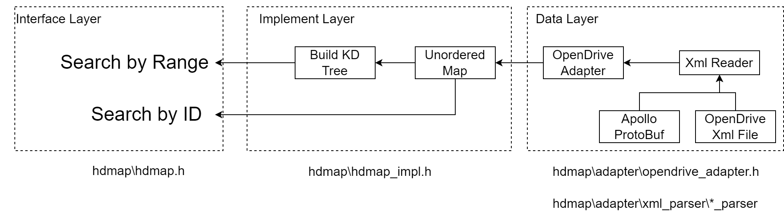
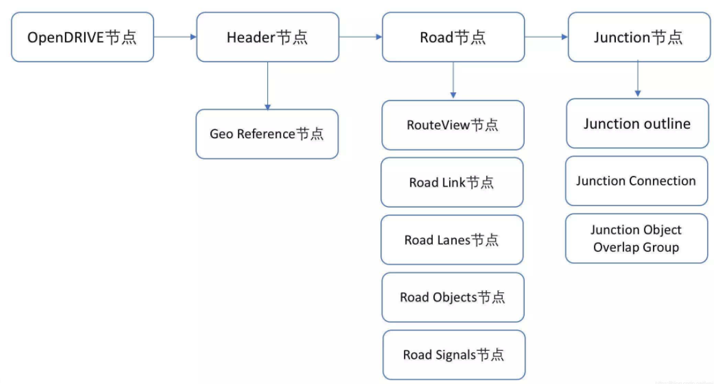
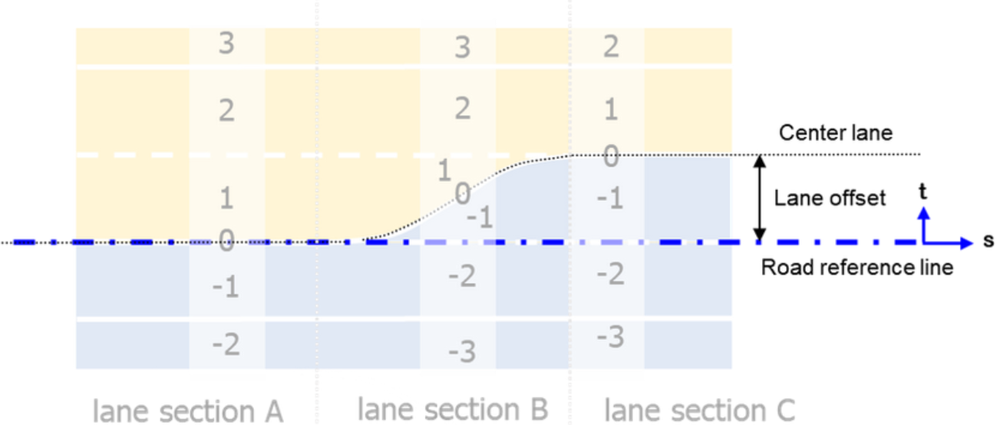
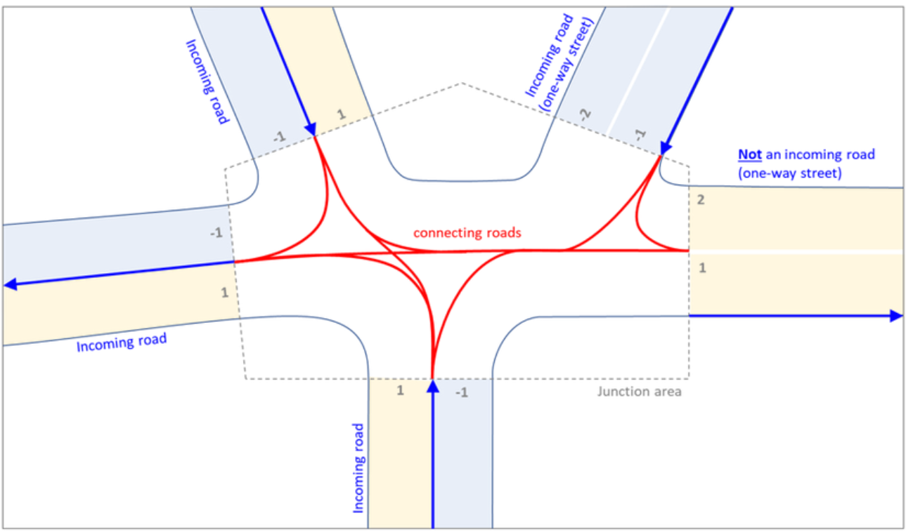
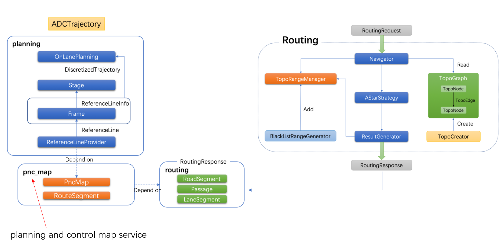
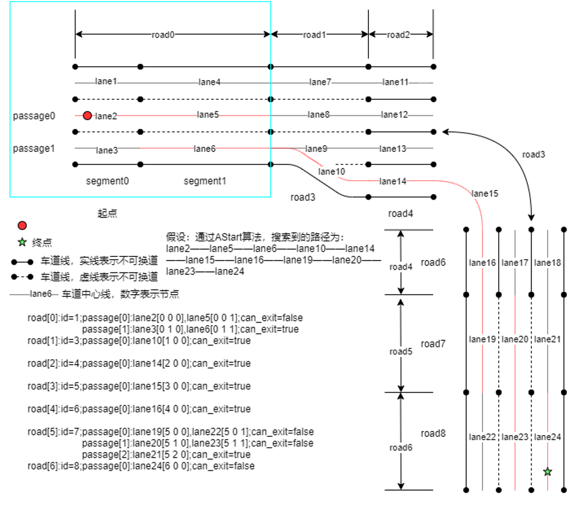
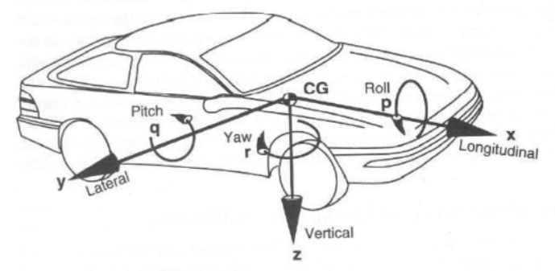
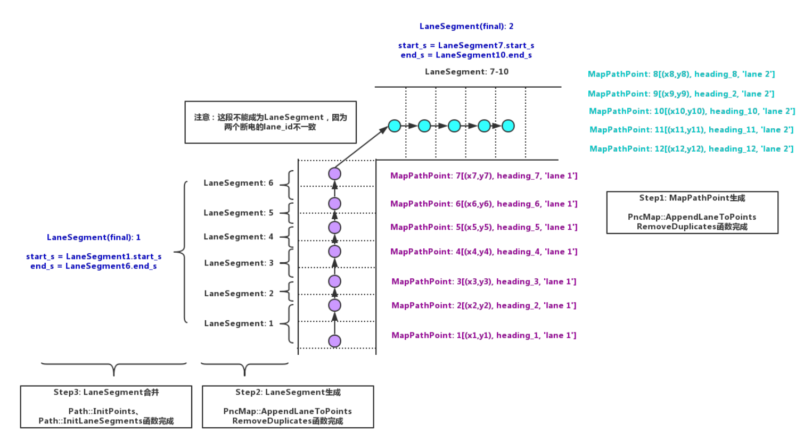
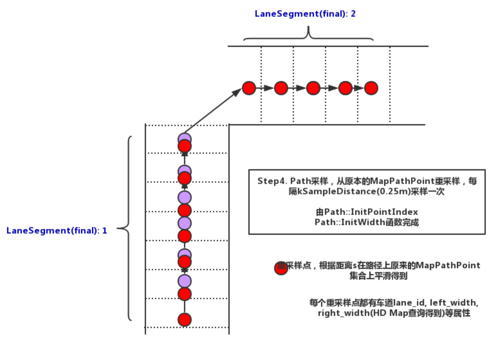
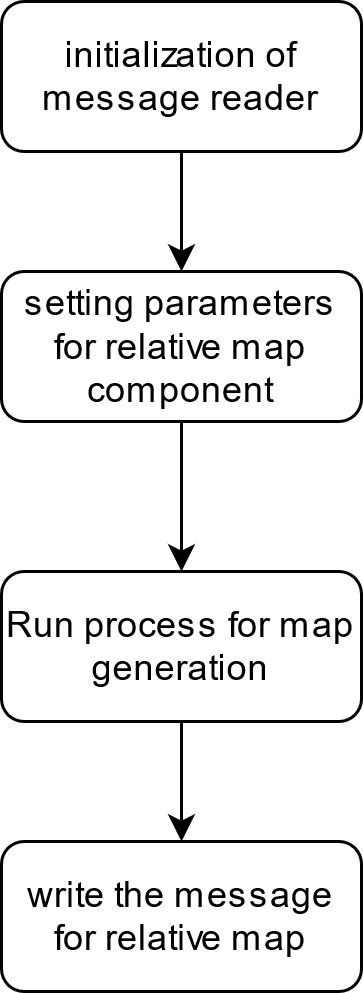

Apollo Auto Map Service Study
This page will show my study notes about Baidu Apollo map service. Later, it may help us to define the arch of wave3 map service.
HD Map Service
Software Architecture

The Apollo map service will load the offline map file (OpenDrive xml) into memory and fill each map element structure defined in protobuf file.
The adapter will further organize map data as key-value unordered map format. The key is the same as the map element id defined in protobuf file.
The implement layer will build k-dimension binary tree for each map element so as to search data by range/position efficiently.
The interface layer will be invoked by routing module, planning module and dreamview module.
Here are all the map interfaces for upper level application.
LaneInfoConstPtr GetLaneById(const Id& id) const; JunctionInfoConstPtr GetJunctionById(const Id& id) const; SignalInfoConstPtr GetSignalById(const Id& id) const; CrosswalkInfoConstPtr GetCrosswalkById(const Id& id) const; StopSignInfoConstPtr GetStopSignById(const Id& id) const; YieldSignInfoConstPtr GetYieldSignById(const Id& id) const; ClearAreaInfoConstPtr GetClearAreaById(const Id& id) const; SpeedBumpInfoConstPtr GetSpeedBumpById(const Id& id) const; OverlapInfoConstPtr GetOverlapById(const Id& id) const; RoadInfoConstPtr GetRoadById(const Id& id) const; ParkingSpaceInfoConstPtr GetParkingSpaceById(const Id& id) const; PNCJunctionInfoConstPtr GetPNCJunctionById(const Id& id) const; RSUInfoConstPtr GetRSUById(const Id& id) const; /** * @brief get all lanes in certain range * @param point the central point of the range * @param distance the search radius * @param lanes store all lanes in target range * @return 0:success, otherwise failed */ int GetLanes(const apollo::common::PointENU& point, double distance, std::vector* lanes) const; /** * @brief get all junctions in certain range * @param point the central point of the range * @param distance the search radius * @param junctions store all junctions in target range * @return 0:success, otherwise failed */ int GetJunctions(const apollo::common::PointENU& point, double distance, std::vector* junctions) const; /** * @brief get all signals in certain range * @param point the central point of the range * @param distance the search radius * @param signals store all signals in target range * @return 0:success, otherwise failed */ int GetSignals(const apollo::common::PointENU& point, double distance, std::vector* signals) const; /** * @brief get all crosswalks in certain range * @param point the central point of the range * @param distance the search radius * @param crosswalks store all crosswalks in target range * @return 0:success, otherwise failed */ int GetCrosswalks(const apollo::common::PointENU& point, double distance, std::vector* crosswalks) const; /** * @brief get all stop signs in certain range * @param point the central point of the range * @param distance the search radius * @param stop signs store all stop signs in target range * @return 0:success, otherwise failed */ int GetStopSigns(const apollo::common::PointENU& point, double distance, std::vector* stop_signs) const; /** * @brief get all yield signs in certain range * @param point the central point of the range * @param distance the search radius * @param yield signs store all yield signs in target range * @return 0:success, otherwise failed */ int GetYieldSigns(const apollo::common::PointENU& point, double distance, std::vector* yield_signs) const; /** * @brief get all clear areas in certain range * @param point the central point of the range * @param distance the search radius * @param clear_areas store all clear areas in target range * @return 0:success, otherwise failed */ int GetClearAreas(const apollo::common::PointENU& point, double distance, std::vector* clear_areas) const; /** * @brief get all speed bumps in certain range * @param point the central point of the range * @param distance the search radius * @param speed_bumps store all speed bumps in target range * @return 0:success, otherwise failed */ int GetSpeedBumps(const apollo::common::PointENU& point, double distance, std::vector* speed_bumps) const; /** * @brief get all roads in certain range * @param point the central point of the range * @param distance the search radius * @param roads store all roads in target range * @return 0:success, otherwise failed */ int GetRoads(const apollo::common::PointENU& point, double distance, std::vector* roads) const; /** * @brief get all parking spaces in certain range * @param point the central point of the range * @param distance the search radius * @param parking spaces store all clear areas in target range * @return 0:success, otherwise failed */ int GetParkingSpaces( const apollo::common::PointENU& point, double distance, std::vector* parking_spaces) const; /** * @brief get all pnc junctions in certain range * @param point the central point of the range * @param distance the search radius * @param junctions store all junctions in target range * @return 0:success, otherwise failed */ int GetPNCJunctions( const apollo::common::PointENU& point, double distance, std::vector* pnc_junctions) const; /** * @brief get nearest lane from target point, * @param point the target point * @param nearest_lane the nearest lane that match search conditions * @param nearest_s the offset from lane start point along lane center line * @param nearest_l the lateral offset from lane center line * @return 0:success, otherwise, failed. */ int GetNearestLane(const apollo::common::PointENU& point, LaneInfoConstPtr* nearest_lane, double* nearest_s, double* nearest_l) const; /** * @brief get the nearest lane within a certain range by pose * @param point the target position * @param distance the search radius * @param central_heading the base heading * @param max_heading_difference the heading range * @param nearest_lane the nearest lane that match search conditions * @param nearest_s the offset from lane start point along lane center line * @param nearest_l the lateral offset from lane center line * @return 0:success, otherwise, failed. */ int GetNearestLaneWithHeading(const apollo::common::PointENU& point, const double distance, const double central_heading, const double max_heading_difference, LaneInfoConstPtr* nearest_lane, double* nearest_s, double* nearest_l) const; /** * @brief get all lanes within a certain range by pose * @param point the target position * @param distance the search radius * @param central_heading the base heading * @param max_heading_difference the heading range * @param nearest_lane all lanes that match search conditions * @return 0:success, otherwise, failed. */ int GetLanesWithHeading(const apollo::common::PointENU& point, const double distance, const double central_heading, const double max_heading_difference, std::vector* lanes) const; /** * @brief get all road and junctions boundaries within certain range * @param point the target position * @param radius the search radius * @param road_boundaries the roads' boundaries * @param junctions the junctions' boundaries * @return 0:success, otherwise failed */ int GetRoadBoundaries(const apollo::common::PointENU& point, double radius, std::vector* road_boundaries, std::vector* junctions) const; /** * @brief get all road boundaries and junctions within certain range * @param point the target position * @param radius the search radius * @param road_boundaries the roads' boundaries * @param junctions the junctions * @return 0:success, otherwise failed */ int GetRoadBoundaries(const apollo::common::PointENU& point, double radius, std::vector* road_boundaries, std::vector* junctions) const; /** * @brief get ROI within certain range * @param point the target position * @param radius the search radius * @param roads_roi the roads' boundaries * @param polygons_roi the junctions' boundaries * @return 0:success, otherwise failed */ int GetRoi(const apollo::common::PointENU& point, double radius, std::vector* roads_roi, std::vector* polygons_roi); /** * @brief get forward nearest signals within certain range on the lane * if there are two signals related to one stop line, * return both signals. * @param point the target position * @param distance the forward search distance * @param signals all signals match conditions * @return 0:success, otherwise failed */ int GetForwardNearestSignalsOnLane( const apollo::common::PointENU& point, const double distance, std::vector* signals) const; /** * @brief get all other stop signs associated with a stop sign * in the same junction * @param id id of stop sign * @param stop_signs stop signs associated * @return 0:success, otherwise failed */ int GetStopSignAssociatedStopSigns( const Id& id, std::vector* stop_signs) const; /** * @brief get all lanes associated with a stop sign in the same junction * @param id id of stop sign * @param lanes all lanes match conditions * @return 0:success, otherwise failed */ int GetStopSignAssociatedLanes(const Id& id, std::vector* lanes) const; /** * @brief get a local map which is identical to the origin map except that all * map elements without overlap with the given region are deleted. * @param point the target position * @param range the size of local map region, [width, height] * @param local_map local map in proto format * @return 0:success, otherwise failed */ int GetLocalMap(const apollo::common::PointENU& point, const std::pair<double, double>& range, Map* local_map) const; /** * @brief get forward nearest rsus within certain range * @param point the target position * @param distance the forward search distance * @param central_heading the base heading * @param max_heading_difference the heading range * @param rsus all rsus that match search conditions * @return 0:success, otherwise failed */ int GetForwardNearestRSUs(const apollo::common::PointENU& point, double distance, double central_heading, double max_heading_difference, std::vector* rsus) const;Apollo HD Map Element Definition
As for the original OpenDrive description, please find the OpenDrive (v1.6) Brief description -PJ -W3 -Per-docupedia (bosch.com) created by user-66ee2.
Here are the major improvements from Apollo,
the shape format of map element
the reference line in OpenDrive is defined with polynomial parameters. And its boundary could be described by some lateral offset.
the apollo will use map point(WGS84) to describe the road boundary and reference line. High storage cost for map supplier, but lower computation cost for client.
extend map element type
no parking zone, crosswalk, speed bump etc.
extend the relationship between map element
add association rule between junction and elements in junction
add association between traffic light and stop line
add distance between lane center line and road boundary
The apollo will store the opendrive data as xml file. Here is the main data structure.

Here are the map message format defined in protobuf file.
HD Map Overall
message Header { optional bytes version = 1; // //Map version optional bytes date = 2; // //Map time optional Projection projection = 3; // //Projection method optional bytes district = 4; // //district optional bytes generation = 5; // optional bytes rev_major = 6; // optional bytes rev_minor = 7; // optional double left = 8; // //Left optional double top = 9; // //superior optional double right = 10; // //right optional double bottom = 11; // //end optional bytes vendor = 12; // //supplier }message Map { optional Header header = 1; // //superior 面所说的地图基本信息 repeated Crosswalk crosswalk = 2; // //pedestrian crossing repeated Junction junction = 3; // //Intersection repeated Lane lane = 4; // //Lane repeated StopSign stop_sign = 5; // //parking 标志 repeated Signal signal = 6; // //Signal lamp repeated YieldSign yield = 7; // //Make a car logo repeated Overlap overlap = 8; // //Overlapping area repeated ClearArea clear_area = 9; // //Prohibit parking area repeated SpeedBump speed_bump = 10; // //Deceleration zone repeated Road road = 11; // //the way repeated ParkingSpace parking_space = 12; // //parking //district 域 repeated Sidewalk sidewalk = 13; // //The roadside road, or the road where pedestrians are taking, the current version has been removed?But some other modules also have Sidewalk }Crosswalk
message Crosswalk { optional Id id = 1; // //serial number optional Polygon polygon = 2; // //Polygonal repeated Id overlap_id = 3; // //Fold ID }Junction
message Junction { optional Id id = 1; // //serial number optional Polygon polygon = 2; // //Polygonal repeated Id overlap_id = 3; // //Fold ID }Lane

The naming rule for Lane ID,
ID=0 is for reference line
Lane ID is continuous
Lane ID in the same lane section shall be unique
Lane ID on the left side of reference line shall be increased along the t (lateral) axis.
Lane ID on the right side of reference line shall be decreased along the t (lateral) axis.
reference line shall be defined in center node in xml file.
// A lane is part of a roadway, that is designated for use by a single line of vehicles.// Most public roads (include highways) have more than two lanes.message Lane { optional Id id = 1; // //serial number // Central lane as reference trajectory, not necessary to be the geometry central. optional Curve central_curve = 2; // //Central curve // Lane boundary curve. optional LaneBoundary left_boundary = 3; // //Left 边界 optional LaneBoundary right_boundary = 4; // //Right boundary // in meters. optional double length = 5; // //length // Speed limit of the lane, in meters per second. optional double speed_limit = 6; // //Speed limit repeated Id overlap_id = 7; // //Overlapped area ID // All lanes can be driving into (or from). repeated Id predecessor_id = 8; // //forward 任id repeated Id successor_id = 9; // //Successor ID // Neighbor lanes on the same direction. repeated Id left_neighbor_forward_lane_id = 10; // //Left 边相邻 //forward 方 //Lane id repeated Id right_neighbor_forward_lane_id = 11; // //right 相邻 //forward 方 //Lane id enum LaneType { // //Lane 类型 NONE = 1; // //none CITY_DRIVING = 2; //城市 //the way BIKING = 3; // //bike SIDEWALK = 4; // //sidewalk PARKING = 5; // //parking }; optional LaneType type = 12; // //Lane 类型 enum LaneTurn { NO_TURN = 1; // //straight LEFT_TURN = 2; // //Left 转弯 RIGHT_TURN = 3; // //Turn right U_TURN = 4; // //Take ahead }; optional LaneTurn turn = 13; // //Turning type repeated Id left_neighbor_reverse_lane_id = 14; // //Advanced negative lane ID ID on the left repeated Id right_neighbor_reverse_lane_id = 15; // //right 相邻反方向 //Lane id optional Id junction_id = 16; // Association between central point to closest boundary. repeated LaneSampleAssociation left_sample = 17; //中心点与最近 //Left 边界之间的关联 repeated LaneSampleAssociation right_sample = 18; //中心点与最近 //Right boundary 之间的关联 enum LaneDirection { FORWARD = 1; // //forward BACKWARD = 2; //后，潮汐 //Lane 借用的情况？ BIDIRECTION = 3; // //Two -way } optional LaneDirection direction = 19; // //Lane // Association between central point to closest road boundary. repeated LaneSampleAssociation left_road_sample = 20; // //The relationship between the center point and the recent left boundary repeated LaneSampleAssociation right_road_sample = 21; // //The relationship between the center point and the recent right boundary }Stop Sign
message StopSign { optional Id id = 1; // //serial number repeated Curve stop_line = 2; // //Stop line, the CURVE curve should be the basic type repeated Id overlap_id = 3; // //Fold ID enum StopType { UNKNOWN = 0; // //unknown ONE_WAY = 1; // //There is only one lane to stop TWO_WAY = 2; THREE_WAY = 3; FOUR_WAY = 4; ALL_WAY = 5; }; optional StopType type = 4;}Traffic sign
message Subsignal { enum Type { UNKNOWN = 1; // //unknown CIRCLE = 2; // //lock up??? ARROW_LEFT = 3; // //Left 边 ARROW_FORWARD = 4; // //forward 面 ARROW_RIGHT = 5; // //right ARROW_LEFT_AND_FORWARD = 6; // //Left //forward ARROW_RIGHT_AND_FORWARD = 7; // //right //forward ARROW_U_TURN = 8; // //Take ahead }; optional Id id = 1; optional Type type = 2; // Location of the center of the bulb. now no data support. optional apollo.common.PointENU location = 3; // //Is it also the basic type? }message Signal { enum Type { UNKNOWN = 1; MIX_2_HORIZONTAL = 2; MIX_2_VERTICAL = 3; MIX_3_HORIZONTAL = 4; MIX_3_VERTICAL = 5; SINGLE = 6; }; optional Id id = 1; optional Polygon boundary = 2; // //Polygonal repeated Subsignal subsignal = 3; // //Sub -signal // TODO: add orientation. now no data support. repeated Id overlap_id = 4; // //Fold ID optional Type type = 5; // //The type here mainly refers to the number and location of the traffic logo?Intersection // stop line repeated Curve stop_line = 6; // //Where is the end ？}Yield Sign (not exist in CN)
message YieldSign { optional Id id = 1; // //serial number repeated Curve stop_line = 2; // //Where is the end repeated Id overlap_id = 3; // //Fold ID }Over Lap
message LaneOverlapInfo { optional double start_s = 1; //position (s-coordinate) optional double end_s = 2; //position (s-coordinate) optional bool is_merge = 3;}// Information about one object in the overlap.message ObjectOverlapInfo { optional Id id = 1; oneof overlap_info { LaneOverlapInfo lane_overlap_info = 3; SignalOverlapInfo signal_overlap_info = 4; StopSignOverlapInfo stop_sign_overlap_info = 5; CrosswalkOverlapInfo crosswalk_overlap_info = 6; JunctionOverlapInfo junction_overlap_info = 7; YieldOverlapInfo yield_sign_overlap_info = 8; ClearAreaOverlapInfo clear_area_overlap_info = 9; SpeedBumpOverlapInfo speed_bump_overlap_info = 10; ParkingSpaceOverlapInfo parking_space_overlap_info = 11; SidewalkOverlapInfo sidewalk_overlap_info = 12; }}// Here, the "overlap" includes any pair of objects on the map// (e.g. lanes, junctions, and crosswalks).message Overlap { optional Id id = 1; // Information about one overlap, include all overlapped objects. repeated ObjectOverlapInfo object = 2;}No parking zone
// A clear area means in which stopping car is prohibitedmessage ClearArea { optional Id id = 1; // //serial number repeated Id overlap_id = 2; // //Fold ID optional Polygon polygon = 3; // //Polygonal }Speed bump
message SpeedBump { optional Id id = 1; // //serial number repeated Id overlap_id = 2; // //Overlapping area repeated Curve position = 3; // //Curve position }Road
// road section defines a road cross-section, At least one section must be defined in order to// use a road, If multiple road sections are defined, they must be listed in order along the roadmessage RoadSection { optional Id id = 1; // lanes contained in this section repeated Id lane_id = 2; // boundary of section optional RoadBoundary boundary = 3;}// The road is a collection of traffic elements, such as lanes, road boundary etc.// It provides general information about the road.message Road { optional Id id = 1; repeated RoadSection section = 2; // if lane road not in the junction, junction id is null. optional Id junction_id = 3;}Parking zone
// ParkingSpace is a place designated to park a car.message ParkingSpace { optional Id id = 1; optional Polygon polygon = 2; repeated Id overlap_id = 3; optional double heading = 4;}Side walk
// A sidewalk (American English) or pavement (British English), also known as a footpath or footway, is a path along the side of a road.message Sidewalk { optional Id id = 1; repeated Id overlap_id = 2; optional Polygon polygon = 3;}Speed limit
message SpeedControl { optional string name = 1; optional apollo.hdmap.Polygon polygon = 2; optional double speed_limit = 3;}map basic geometry
it will be referred by other map element
// Polygon, not necessary convex.message Polygon { repeated apollo.common.PointENU point = 1;}// Straight line segment.message LineSegment { repeated apollo.common.PointENU point = 1;}// Generalization of a line.message CurveSegment { oneof curve_type { LineSegment line_segment = 1; } optional double s = 6; // start position (s-coordinate) optional apollo.common.PointENU start_position = 7; optional double heading = 8; // start orientation optional double length = 9;}// An object similar to a line but that need not be straight.message Curve { repeated CurveSegment segment = 1;}Junction for PNC map

message PNCJunction { optional Id id = 1; optional Polygon polygon = 2; repeated Id overlap_id = 3;}Open Point
The map supplier for wave3 will provide us with SDK or EHP/EHR. It's less likely we will load the whole map file when power on.
We shall keep the KD tree design and make our own adapter to parse/organize the EHR data or SDK data.
PNC (Planning and Control) Map Service
Since the planning interface from map supplier is not clear so far, this section will only provide the general introduction and will not go through the details about the PNC map service. Let's assume the map supplier will at least provide us the route response. So this page will not cover the topo graph/map generation and usage.
For more details about PNC, please find the link (Chinese Only),
Analyze the reference line and trajectory of Baidu Apollo (Paul.pub)
Apollo-Note/pnc_map.md at master · YannZyl/Apollo-Note (github.com)
Background
The planning and control map service (PNC) will accept and process the response from route module and provide a smooth and drivable path/trajectory + necessary driving attributes to the planning module so that the ReferenceLineProvider can generate the reference line to control/guide the vehicle. Hence, the PNC module is also the sub-module of planning. The PNC map is invoked in function "ReferenceLineProvider::CreateReferenceLine".

Input and Output
Input of PNC map:
routing response from route module
hd map (lane)
vehicle state
Output of PNC map:
smooth and drivable path for short time planning (from ego position to next way point)
std::vector
necessary driving attribute
The route response is generated from A* algorithm over the topo map from routing module. Here is its message format,
# routing\proto\routing.protomessage LaneWaypoint { optional string id = 1; # id of associated lane, it's string, not int! optional double s = 2; optional apollo.common.PointENU pose = 3; // When the developer selects a point on the dreamview route editing // the direction can be specified by dragging the mouse // dreamview calculates the heading based on this to support construct lane way point with heading optional double heading = 4;}message LaneSegment { optional string id = 1; # id of lane, it's string, not int! optional double start_s = 2; optional double end_s = 3;}message Measurement { optional double distance = 1;}enum ChangeLaneType { FORWARD = 0; LEFT = 1; RIGHT = 2;};message Passage { repeated LaneSegment segment = 1; optional bool can_exit = 2; optional ChangeLaneType change_lane_type = 3 [default = FORWARD];}message RoadSegment { optional string id = 1; repeated Passage passage = 2;}message RoutingResponse { optional apollo.common.Header header = 1; repeated RoadSegment road = 2; optional Measurement measurement = 3; optional RoutingRequest routing_request = 4; // the map version which is used to build road graph optional bytes map_version = 5; optional apollo.common.StatusPb status = 6;}Here is an example of route response if it's parsed.

all_lane_ids_: ['lane 1', 'lane 1', 'lane 1', // RoadSegment 0, Passage 0, LaneSegment 0-2 'lane 2', 'lane 2', 'lane 2', // RoadSegment 0, Passage 1, LaneSegment 0-2 'lane 1', 'lane 1', 'lane 1', // RoadSegment 1, Passage 0, LaneSegment 0-2 'lane 2', 'lane 2', 'lane 2', // RoadSegment 1, Passage 1, LaneSegment 0-2 'lane 1', 'lane 1', 'lane 1', // RoadSegment 2, Passage 0, LaneSegment 0-2 'lane 2', 'lane 2', 'lane 2',] // RoadSegment 2, Passage 1, LaneSegment 0-2route_indices_: [LaneSegment{id: 'lane 1', s: [100,110], index: [0,0,0]}, // RoadSegment 0, Passage 0, LaneSegment 0 LaneSegment{id: 'lane 1', s: [110,120], index: [0,0,1]}, // RoadSegment 0, Passage 0, LaneSegment 1 LaneSegment{id: 'lane 1', s: [120,130], index: [0,0,2]}, // RoadSegment 0, Passage 0, LaneSegment 2 LaneSegment{id: 'lane 2', s: [240,250], index: [0,1,0]}, // RoadSegment 0, Passage 1, LaneSegment 0 LaneSegment{id: 'lane 2', s: [250,260], index: [0,1,1]}, // RoadSegment 0, Passage 1, LaneSegment 1 LaneSegment{id: 'lane 2', s: [260,270], index: [0,1,2]}, // RoadSegment 0, Passage 1, LaneSegment 2 LaneSegment{id: 'lane 1', s: [130,140], index: [1,0,0]}, // RoadSegment 1, Passage 0, LaneSegment 0 LaneSegment{id: 'lane 1', s: [140,150], index: [1,0,1]}, // RoadSegment 1, Passage 0, LaneSegment 1 LaneSegment{id: 'lane 1', s: [150,160], index: [1,0,2]}, // RoadSegment 1, Passage 0, LaneSegment 2 LaneSegment{id: 'lane 2', s: [270,280], index: [1,1,0]}, // RoadSegment 1, Passage 1, LaneSegment 0 LaneSegment{id: 'lane 2', s: [280,290], index: [1,1,1]}, // RoadSegment 1, Passage 1, LaneSegment 1 LaneSegment{id: 'lane 2', s: [290,300], index: [1,1,2]}, // RoadSegment 1, Passage 1, LaneSegment 2 LaneSegment{id: 'lane 1', s: [160,170], index: [2,0,0]}, // RoadSegment 2, Passage 0, LaneSegment 0 LaneSegment{id: 'lane 1', s: [170,180], index: [2,0,1]}, // RoadSegment 2, Passage 0, LaneSegment 1 LaneSegment{id: 'lane 1', s: [180,190], index: [2,0,2]}, // RoadSegment 2, Passage 0, LaneSegment 2 LaneSegment{id: 'lane 2', s: [300,310], index: [2,1,0]}, // RoadSegment 2, Passage 1, LaneSegment 0 LaneSegment{id: 'lane 2', s: [310,320], index: [2,1,1]}, // RoadSegment 2, Passage 1, LaneSegment 1 LaneSegment{id: 'lane 2', s: [320,330], index: [2,1,2]}] // RoadSegment 2, Passage 1, LaneSegment 2Here is another example for route response, more complicated. There are 7 road segments. The cyan bouding box is the first road segments.

As for lane format in hd map, it's already mentioned in section HD map service.
As for the vehicle state, it describe the vehicle position, orientation, heading, speed and acceleration etc. Here is the vehicle state format,
# \common\vehicle_state\proto\vehicle_state.protomessage VehicleState { optional double x = 1 [default = 0.0]; optional double y = 2 [default = 0.0]; optional double z = 3 [default = 0.0]; optional double timestamp = 4 [default = 0.0]; optional double roll = 5 [default = 0.0]; optional double pitch = 6 [default = 0.0]; optional double yaw = 7 [default = 0.0]; optional double heading = 8 [default = 0.0]; optional double kappa = 9 [default = 0.0]; optional double linear_velocity = 10 [default = 0.0]; optional double angular_velocity = 11 [default = 0.0]; optional double linear_acceleration = 12 [default = 0.0]; optional apollo.canbus.Chassis.GearPosition gear = 13; optional apollo.canbus.Chassis.DrivingMode driving_mode = 14; optional apollo.localization.Pose pose = 15; optional double steering_percentage = 16;}
As for the output,
the smooth and drivable trajectory is described by the vector " std::vector
other driving attributes for route segments,
NextAction
next driving action, e.g. straight, left turn, right turn
CanExit
whether current passage can be connected with next passage on the route
IsOnSegment
whether ego vehicle is on route segments
StopForDestination
whether the road segments is target place
Main Process Step
parse each incoming route response message
extract the lane segment (from HD map, given idx) and the index of road, passage and lane segment
extract the lane segment covered request waypoint (start and end)
based on current ego vehicle state, project the vehicle on the lane (HD map)
get the associated lane and nearest lane point ( adc_waypoint_ ) from HD map (hdmap_ -> GetLanesWithHeading(...), ... , lane -> GetNearestPoint ( { point . x (), point . y () } , & distance ); )
get the route index of associated lane ( adc_route_index_ )
get the next route way point index ( next_routing_waypoint_index_ )
compute the drivable area between current vehicle position and next route way point as short time planning and output the drivable road segments
based on current lane, find the neighboring passages (left/right) from HD map → also consider the position of next waypoint and target passage, maybe no need to change passage.
project vehicle position into passage
check whether the passage(current, left/right) can be achieved based on current position(waypoint)
extend the road segment along longitudinal direction with backward_length and forward_length distance
set driving attribute for the road segment
generate smooth path/trajectory based on drivable road segment
discretize the route segment to map path point (these points come from the lane of HD MAP, central_curve → line_segment → point)
connect each map path point and generate LaneSegment2d

map point resample with fixed interval e.g. 0.25m

set overlap attribute between road segments
e.g. junction, parking zone, cross walk
Relative Map
Relative map module is a middle layer connecting HDMap/Perception module and planning module. This module generates real-time relative map in the body coordinate system (FLU) and a reference line for planning.
The inputs for relative map module have two parts: offline and online. The offline part is navigation line (human driving path) and the HDMap information on and near navigation line. And the online part is the traffic sign related information from perception module, e.g., lane marker, crosswalk, traffic light etc. The generation of relative map can leverage both online and offline parts. It also works with either online or offline part only.
Inputs
NavigationInfo from dreamview module
LaneMarker from perception module
Localization from localization module
Chassis from Canbus module
Output
Relative map follows map format defined in modules/map/proto/map.proto
Module Frame

Main Steps
Initilization of message reader (RelativeMapComponent::InitReaders() )
create the message reader for:
/apollo/navigation
/apollo/canbus/chassis
/apollo/localization/pose
/apollo/perception/obstacles
create relative map writer
the form of the message of relative map: MapMsg
// The map message in transmission format.message MapMsg { optional apollo.common.Header header = 1; // Coordination: FLU // x: Forward // y: Left // z: Up optional apollo.hdmap.Map hdmap = 2; // key: type string; the lane id in Map // value: Navigation path; the reference line of the lane map navigation_path = 3; // lane marker info from perception optional apollo.perception.LaneMarkers lane_marker = 4; // localization optional apollo.localization.LocalizationEstimate localization = 5;}setting parameters for relative map component
The main parameters are related to lane. The detail of the config is show in below:
map_param { default_left_width: 1.875 default_right_width: 1.875 default_speed_limit : 29.06 # 65 mph}navigation_lane { min_lane_marker_quality: 0.49 lane_source: OFFLINE_GENERATED max_len_from_navigation_line: 250.0 min_len_for_navigation_lane: 150.0 max_len_for_navigation_lane: 250.0 ratio_navigation_lane_len_to_speed: 8.0 max_distance_to_navigation_line: 15.0 min_view_range_to_use_lane_marker: 0.5 min_lane_half_width: 1.5 max_lane_half_width: 2.0 lane_marker_weight: 0.1 }Run process for map generation
The relative map generation run at a frequency of 10hz. And totally there are 3 steps in this process:
update vehicle state from localization and chassis; update navigation lane from perception_obstacles
generate the navigation path in the with perception and navigation
create map proto from navigation path
Path Generation
There are mainly two sources to be used for generating the path: one is from NavigationLine, another is from Perception.
The priority of them: Merging > navigation > perception
Offline (navigation):
convert the paths in nagivation from ENU to FLU coordinate
order the navigation paths according to the y value in FLU from small to large
sort navigation paths from left to right according to the vehicle's direction. In the FLU, the y-coordinate on the left side of the vehicle is positive, and the right value is negative. The navigation paths can be sorted from left to right according to its y-coordinate.
get the navigation path which the vehicle is currently on.
Merge current navigation path where the vehicle is located with perceived lane markers.
use the weight to calculate all the attributes of the points on two path( weight_1 * nagivation + weight_2 * perception)
set the width for the navigation path which the vehicle is currently on
set the width between each navigation path and ist adjacent path
perception
use the perceived left and right lane marking to compute the coefficients of the driving path. (i.e. c0, c1, c2, c3, c4)
calculate the attributes of the points on the computed driving path.
set the width
The attributes of the points on the path:
|
variable name |
description |
|
x |
x-coordinate |
|
y |
y-coordinate |
|
z |
z-coordinate |
|
theta |
heading_angle |
|
kappa |
curvature |
|
s |
|
|
dkappa |
derivative of kappa |
|
ddkappa |
second derivative of kappa |
|
lane_id |
id of the lane |
|
x_derivative |
derivative of x-coordinate |
|
y_derivative |
derivative of y-coordinate |
CreateMap
create map proto from navigation path. The following information for lane and road will be generated:
lane: id; type; turn; speed limit; center line; left/right boundary; left/right sample (association between central point to closest boundary)
road: id; section; boundary